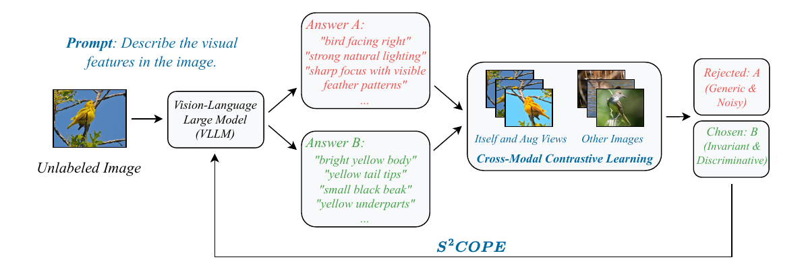
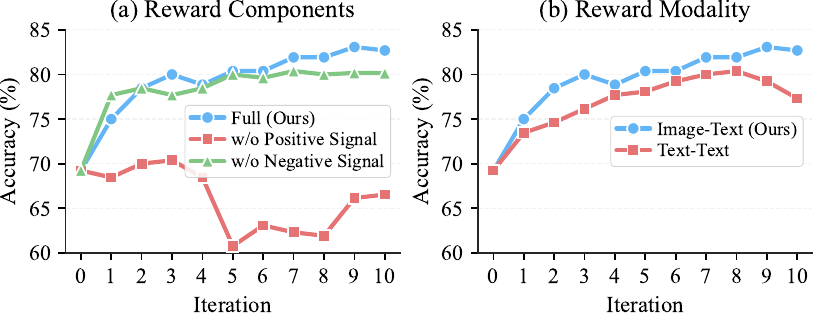

Can unlabeled data teach foundation models interpretable concepts?
Current representation learning paradigms force a fundamental compromise: self-supervised methods scale to massive datasets but yield opaque features, whereas interpretable models remain bottlenecked by the need for dense human annotation.
We introduce Self-Supervised Concept discOvery via Preference lEarning (S²COPE), a label-free framework that resolves this dilemma. Instead of treating Vision-Large-Language Models (VLLMs) as static feature extractors, S²COPE leverages them as active participants in a self-supervised preference optimization loop. By autonomously hypothesizing, validating, and reinforcing candidate visual attributes directly from raw imagery, our framework discovers novel, structured concepts without a single label.
Extensive experiments across natural, medical, and physics domains demonstrate that S²COPE successfully extracts domain-specific concepts where standard VLLMs often fail to generate. By amortizing concept discovery directly into the VLLM backbone through our self-supervised preference objective — rather than relying on static generation and disjoint filtering — we achieve up to a 24-point absolute improvement in downstream top-1 classification accuracy on unseen data.
A four-stage end-to-end self-supervised loop: propose → reward → pair → preference-optimize.

Training only on unlabeled iNaturalist-mini, the frozen S²COPE model improves concept-based linear-probing accuracy by an average of ~16 points across 8 datasets, with the largest gains on the most out-of-domain targets: +24.5% on BloodMNIST, +21.1% on OrganCMNIST, +20.2% on Gravity Spy.

@article{xiang2026scope,
title = {S$^2$COPE: Self-Supervised Concept Discovery via Preference Learning},
author = {Xiang, Shilong and Zhang, Zirui and Mao, Chengzhi},
journal = {arXiv preprint},
year = {2026}
}